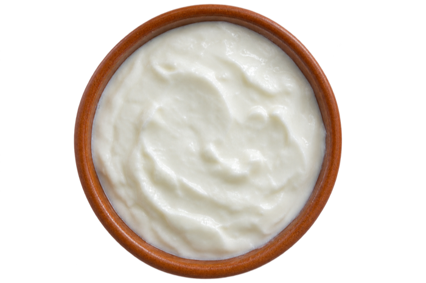
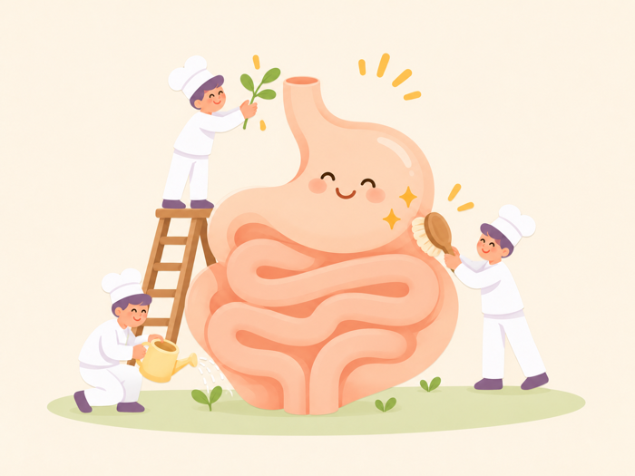

Fermented favourites
A little goodness in every spoon.
A LITTLE CARE GOES A LONG WAY
Thoughtful picks for a happier, healthier everyday.
Explore now ↗

A little goodness in every spoon.

Everyday favourites for your gut.
Discover something good for your everyday.